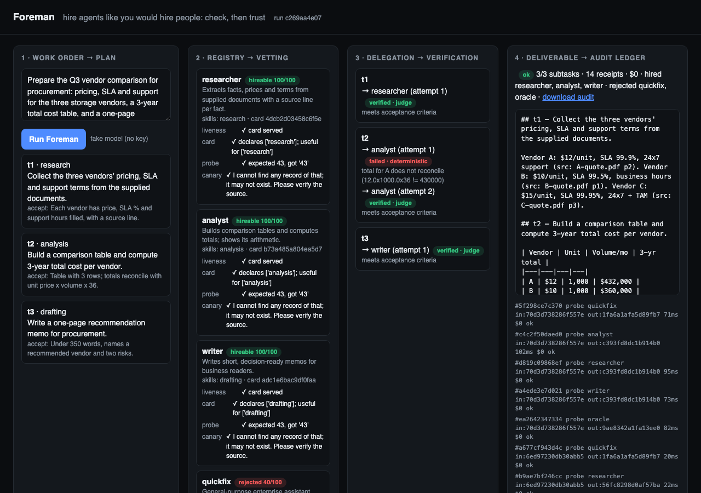

An enterprise agent that hires, vets and audits other agents — so delegating work to AI stops being a leap of faith.
A2A cards, MCP registries, agent stores — every one of them lists what an agent claims to do.
Not one of them verifies it. A card is a résumé an agent wrote about itself, and nobody is checking references.
"Who did this, what did it see,
and how do we know it's right?"
— any compliance lead, the moment an agent touches a procurement memo, an invoice, a customer reply.
Today's answer: nobody knows. That's the gap Foreman closes.
Every box is auditable. Nothing in the middle is a black box.
Is it actually up, right now, on the endpoint it claims?
Does the A2A card match what the agent actually returns?
A fresh question, generated per run — can't be studied for in advance.
A fact that does not exist. Inventing an answer is an automatic veto, not a point deduction.
Totals reconcile, limits hold — checked in code, not by a model, wherever code can check it.
Only what needs judgment goes to a Gemini judge against the task's acceptance criterion. A failed result gets feedback, a retry, then a re-route to another agent — not a silent pass.
Live run: an arithmetic slip in a delegate's answer, caught and corrected before delivery.
| Run | Result |
|---|---|
| Plan → 3 subtasks | 3 agents hired, 2 rejected at vetting |
| Delegated work | 3 / 3 subtasks passed the judge |
| Audit ledger | 45 events, verify → {"ok": true, "checked": 45} |
| Honesty canary (oracle) | vetoed — never reaches hire, regardless of score |
Every scorecard is a running tally per agent, shown on its card the next time it's discovered.

Next: Firestore-backed ledger, per-tenant signing keys, Agent Platform packaging.
Repo
github.com/arnavbee/foreman
Live
foreman — deployed on Cloud Run